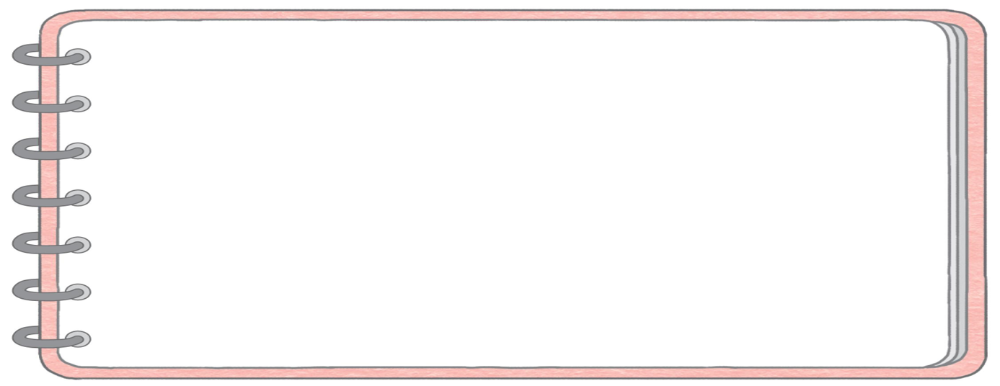

-
-
어떤 내용으로 생명 존중 전시회를 해야 할까요?예다른 생명을 존중하는 방법이나 규칙을 담은 팻말 만들기내가 생각한 전시회 활동을 모둠 친구들과 이야기해 봅시다.
-

모둠의 생명 존중 전시회 계획
이주연
저는 생명 존중 전시회에
을/를 전시하고 싶습니다.생명 존중 포스터
왜냐하면 이 활동으로 생명을 존중하는 방법과
저의 마음가짐을 알릴 수 있기 때문입니다.
-